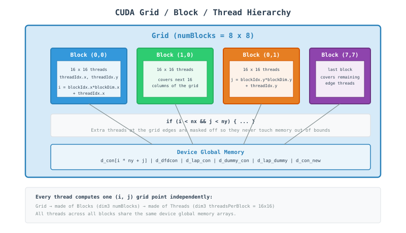
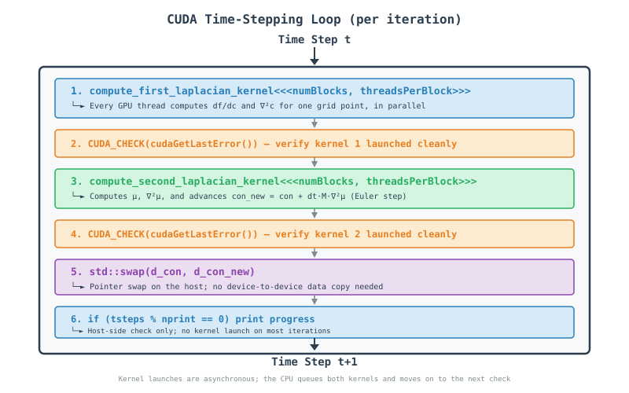

CUDA Finite Difference Phase Field Code - A Tutorial Guide
Table of Contents
Introduction
This document provides a comprehensive tutorial on parallel computing using CUDA (Compute Unified Device Architecture) through a finite difference code that solves the Cahn-Hilliard equation—a fundamental model for phase separation in materials science. The code demonstrates how to take a serial computational problem and parallelize it across thousands of lightweight threads on a GPU.
What You Will Learn
How to write and launch CUDA kernels
The grid / block / thread execution model
Managing separate host (CPU) and device (GPU) memory
Data management with flattened 1D arrays on the device
Performance optimization techniques for GPU computing
Understanding the Physics
The Cahn-Hilliard equation describes phase separation in binary alloys:
where:
\(c\): Concentration field
\(M\): Mobility
\(F\): Free energy functional
The code uses a 5-point finite difference stencil to discretize this equation spatially:
Why Parallelize with CUDA?
The 2D domain is \(128 \times 128\) grid points, evolved for \(5000\) time steps. For larger, realistic simulations:
Serial: every grid point updated one at a time on the CPU — too slow to scale to fine grids or long runs.
CUDA Parallel: one GPU thread is assigned to each grid point; thousands of points are updated at the same instant, in a single kernel launch.
CUDA Concepts for Beginners
What is CUDA?
CUDA is NVIDIA’s platform for writing programs that run on the GPU. Instead of a handful of CPU cores, a GPU offers thousands of small, simple cores. CUDA lets you write a function called a kernel that a huge number of threads execute simultaneously, each working on its own piece of data.
Key Concepts
Concept |
Analogy |
In Our Code |
|---|---|---|
Thread |
One assembly-line worker |
Handles a single grid point |
Block |
A team of workers |
A |
Grid |
The whole factory floor |
All blocks needed to cover the |
Kernel |
The job instructions handed to every worker |
|
Host / Device |
The office vs. the factory floor |
CPU ( |
Grid / Block / Thread Execution Model

Step-by-Step Code Walkthrough
Step 1: Include CUDA and Standard Headers
#include <iostream>
#include <fstream>
#include <random>
#include <chrono>
#include <cmath>
#include <vector>
#include <algorithm>
#include <iomanip>
#include <cuda_runtime.h>
using namespace std::chrono;
What happens here?
<cuda_runtime.h>: CUDA runtime API header — declarescudaMalloc,cudaMemcpy, kernel launch syntax, and error-handling functions.The other headers are standard C++: file output (
ch.dat), random noise generation, timing, and formatted printing.using namespace std::chronolets the code callhigh_resolution_clock::now()without thestd::chrono::prefix.
Step 2: Physical and Simulation Parameters
constexpr int Nx = 128;
constexpr int Ny = 128;
constexpr double dx = 1.0;
constexpr double dy = 1.0;
constexpr int nsteps = 5000;
constexpr int nprint = 1000;
constexpr double dt = 0.01;
constexpr double con_0 = 0.4;
constexpr double mobility = 1.0;
constexpr double grad_coef = 0.5;
constexpr double noise = 0.02;
constexpr double A = 1.0;
Important Points:
Nx = Ny = 128: 16,384 grid points total — small enough to fit in a handful of thread blocks.nsteps = 5000,nprint = 1000: run 5000 time steps, printing progress every 1000.con_0,mobility,grad_coef,noise,A: the same material/physics constants used in the MPI and OpenMP versions.
Step 3: CUDA Error Checking Macro
#define CUDA_CHECK(call) \
do { \
cudaError_t err = call; \
if (err != cudaSuccess) { \
std::cerr << "CUDA error in " << __FILE__ << " line " << __LINE__ \
<< ": " << cudaGetErrorString(err) << std::endl; \
exit(EXIT_FAILURE); \
} \
} while(0)
What happens here?
do { ... } while(0): makes the macro behave like a single statement, even followed by a semicolon.cudaError_t err = call: runs the CUDA call and captures its return code.cudaGetErrorString(err): converts the error code into a human-readable message.Wrapping every CUDA call in
CUDA_CHECK(...)is standard practice — GPU errors otherwise fail silently.
Step 4: Kernel 1 - Free Energy Derivative and First Laplacian
__global__ void compute_first_laplacian_kernel(
const double* con,
double* dfdcon,
double* lap_con,
int nx, int ny,
double dx, double dy,
double A_val, double grad_coef_val)
{
int i = blockIdx.x * blockDim.x + threadIdx.x;
int j = blockIdx.y * blockDim.y + threadIdx.y;
if (i < nx && j < ny) {
int ip = (i + 1) % nx;
int im = (i - 1 + nx) % nx;
int jp = (j + 1) % ny;
int jm = (j - 1 + ny) % ny;
double c = con[i * ny + j];
dfdcon[i * ny + j] = A_val * (2.0 * c * (1.0 - c) * (1.0 - c) -
2.0 * c * c * (1.0 - c));
lap_con[i * ny + j] = (con[ip * ny + j] + con[im * ny + j] +
con[i * ny + jp] + con[i * ny + jm] -
4.0 * c) / (dx * dy);
}
}
What happens here?
__global__: marks this as a kernel — it runs on the GPU and is launched from the CPU.blockIdx,blockDim,threadIdx: built-in CUDA variables that let each thread compute its own unique(i, j)grid coordinate.if (i < nx && j < ny): boundary check — since the grid isn’t always an exact multiple of the block size, some threads at the edges have no valid grid point and simply do nothing.ip,im,jp,jm: periodic boundary neighbors, computed with modulo arithmetic (wrap-around), the same idea as the MPI and OpenMP versions.con[i * ny + j]: 1D flattened indexing — CUDA device arrays are allocated as flatdouble*buffers, so a 2D index is mapped withrow * columns + column.dfdcon[...]: derivative of the double-well free energy \(f(c) = Ac^2(1-c)^2\), driving separation into \(c \approx 0\) and \(c \approx 1\) phases.lap_con[...]: the 5-point Laplacian stencil, computed independently by every thread with no communication needed.
Step 5: Kernel 2 - Chemical Potential and Time Integration
__global__ void compute_second_laplacian_kernel(
const double* con,
const double* dfdcon,
const double* lap_con,
double* dummy_con,
double* lap_dummy,
double* con_new,
int nx, int ny,
double dx, double dy,
double grad_coef_val,
double dt_val, double mobility_val)
{
int i = blockIdx.x * blockDim.x + threadIdx.x;
int j = blockIdx.y * blockDim.y + threadIdx.y;
if (i < nx && j < ny) {
int ip = (i + 1) % nx;
int im = (i - 1 + nx) % nx;
int jp = (j + 1) % ny;
int jm = (j - 1 + ny) % ny;
dummy_con[i * ny + j] = dfdcon[i * ny + j] - grad_coef_val * lap_con[i * ny + j];
lap_dummy[i * ny + j] = (dummy_con[ip * ny + j] + dummy_con[im * ny + j] +
dummy_con[i * ny + jp] + dummy_con[i * ny + jm] -
4.0 * dummy_con[i * ny + j]) / (dx * dy);
double new_val = con[i * ny + j] + dt_val * mobility_val * lap_dummy[i * ny + j];
con_new[i * ny + j] = fmax(0.00001, fmin(0.99999, new_val));
}
}
Why a second kernel?
dummy_con: the chemical potential \(\mu = \frac{\partial f}{\partial c} - \kappa \nabla^2 c\), needed before it can itself be differentiated.lap_dummy: \(\nabla^2 \mu\), computed with the same 5-point stencil, now on the chemical potential field.con_new[...] = con + dt \cdot M \cdot \nabla^2 \mu$: explicit forward-Euler time step, clamped withfmax/fminto keep the concentration physically bounded between0.00001and0.99999`.The two kernels are separate because
lap_dummydepends ondummy_convalues from neighboring threads — every thread must finish writingdummy_conbefore any thread reads its neighbors’ values, and a kernel launch is the simplest way to guarantee that synchronization across the whole grid.
Step 6: Host Output Function
void output_concentration_on_file(const double* con, int nx, int ny, const std::string& filename = "ch.dat") {
std::ofstream outfile(filename);
if (!outfile.is_open()) {
std::cerr << "Error opening file: " << filename << std::endl;
return;
}
outfile << std::fixed << std::setprecision(6);
for (int i = 0; i < nx; ++i) {
for (int j = 0; j < ny; ++j) {
outfile << con[i * ny + j] << (j < ny - 1 ? " " : "");
}
outfile << "\n";
}
outfile.close();
std::cout << "Results written to: " << filename << std::endl;
}
Important Points:
This is a plain host (CPU) function — no
__global__keyword, so it runs only on the CPU, after results are copied back from the GPU.std::setprecision(6): writes 6 digits after the decimal point in fixed-point notation.The ternary
(j < ny - 1 ? " " : "")separates values with spaces but avoids a trailing space at the end of each row.
Step 7: Host Memory Allocation and Initialization
size_t N = Nx * Ny;
size_t bytes = N * sizeof(double);
double* h_con = new double[N];
double* h_con_new = new double[N];
double* h_dfdcon = new double[N];
double* h_lap_con = new double[N];
double* h_dummy_con = new double[N];
double* h_lap_dummy = new double[N];
std::mt19937 rng(12345);
std::uniform_real_distribution<double> dist(0.0, 1.0);
for (int i = 0; i < Nx; ++i) {
for (int j = 0; j < Ny; ++j) {
double r = dist(rng);
h_con[i * Ny + j] = con_0 + noise * (0.5 - r);
}
}
Important Points:
h_prefix denotes host (CPU) memory, allocated with plainnew[]as flat arrays.std::mt19937 rng(12345): a fixed seed, so every run produces the same initial noise — useful for reproducibility (unlike the MPI version, there is only one process, so no per-rank seed offset is needed).Initialization runs serially on the CPU before anything is sent to the GPU.
Step 8: Device Memory Allocation and Host-to-Device Copy
double* d_con;
double* d_con_new;
double* d_dfdcon;
double* d_lap_con;
double* d_dummy_con;
double* d_lap_dummy;
CUDA_CHECK(cudaMalloc(&d_con, bytes));
CUDA_CHECK(cudaMalloc(&d_con_new, bytes));
CUDA_CHECK(cudaMalloc(&d_dfdcon, bytes));
CUDA_CHECK(cudaMalloc(&d_lap_con, bytes));
CUDA_CHECK(cudaMalloc(&d_dummy_con, bytes));
CUDA_CHECK(cudaMalloc(&d_lap_dummy, bytes));
CUDA_CHECK(cudaMemcpy(d_con, h_con, bytes, cudaMemcpyHostToDevice));
Important Points:
d_prefix denotes device (GPU) memory — a completely separate address space from the host.cudaMalloc(&d_con, bytes): allocatesbytesof GPU global memory and stores the resulting pointer ind_con.cudaMemcpy(..., cudaMemcpyHostToDevice): only the initial concentration field needs to be uploaded — the other five arrays are computed entirely on the GPU.
Step 9: Kernel Launch Configuration
dim3 threadsPerBlock(16, 16);
dim3 numBlocks((Nx + threadsPerBlock.x - 1) / threadsPerBlock.x,
(Ny + threadsPerBlock.y - 1) / threadsPerBlock.y);
Important Points:
dim3: CUDA’s built-in 3-component (x, y, z) dimension type.threadsPerBlock(16, 16): 256 threads per block, a typical size for 2D stencil problems.numBlocks: computed with ceiling division so the grid of blocks fully coversNx x Ny, even when it doesn’t divide evenly — e.g.(128 + 16 - 1) / 16 = 8blocks per dimension here.
Step 10: The Evolution Loop
for (int tsteps = 1; tsteps <= nsteps; tsteps++) {
compute_first_laplacian_kernel<<<numBlocks, threadsPerBlock>>>(
d_con, d_dfdcon, d_lap_con,
Nx, Ny, dx, dy, A, grad_coef);
CUDA_CHECK(cudaGetLastError());
compute_second_laplacian_kernel<<<numBlocks, threadsPerBlock>>>(
d_con, d_dfdcon, d_lap_con,
d_dummy_con, d_lap_dummy, d_con_new,
Nx, Ny, dx, dy, grad_coef, dt, mobility);
CUDA_CHECK(cudaGetLastError());
std::swap(d_con, d_con_new);
if (tsteps % nprint == 0) {
std::cout << "Done steps = " << tsteps << std::endl;
}
}
What happens here?
kernel<<<numBlocks, threadsPerBlock>>>(...): the triple angle-bracket syntax launches the kernel across the whole grid — this line hands work to the GPU and returns immediately (asynchronous launch).CUDA_CHECK(cudaGetLastError()): checks for launch-configuration errors right after each kernel call, since kernel launches don’t return an error code directly.std::swap(d_con, d_con_new): swaps the two device pointers on the host side — an O(1) operation with no GPU memory copy involved, exactly like the pointer swap in the MPI and OpenMP versions.The second kernel implicitly waits for the first to finish, because both are issued on the GPU’s default stream, which executes kernels in the order they were launched.
Step 11: Final Data Transfer and Cleanup
CUDA_CHECK(cudaMemcpy(h_con, d_con, bytes, cudaMemcpyDeviceToHost));
auto end_time = high_resolution_clock::now();
auto duration = duration_cast<milliseconds>(end_time - start_time);
std::cout << " Time = " << duration.count() / 1000.0 << " seconds." << std::endl;
output_concentration_on_file(h_con, Nx, Ny);
CUDA_CHECK(cudaFree(d_con));
CUDA_CHECK(cudaFree(d_con_new));
CUDA_CHECK(cudaFree(d_dfdcon));
CUDA_CHECK(cudaFree(d_lap_con));
CUDA_CHECK(cudaFree(d_dummy_con));
CUDA_CHECK(cudaFree(d_lap_dummy));
delete[] h_con;
delete[] h_con_new;
delete[] h_dfdcon;
delete[] h_lap_con;
delete[] h_dummy_con;
delete[] h_lap_dummy;
return EXIT_SUCCESS;
Important Points:
cudaMemcpy(..., cudaMemcpyDeviceToHost): copies the final concentration field back to CPU memory so it can be written toch.dat.cudaFree(...): releases GPU memory — everycudaMallocneeds a matchingcudaFree.delete[] h_...: releases the corresponding CPU memory — everynew[]needs a matchingdelete[].Skipping either kind of cleanup leaks memory on the host or the device, respectively.
Visualization of Parallel Execution
Per-Timestep Kernel Flow:

Performance Optimization
Memory Coalescing
Why indexing order matters:
GPU memory bandwidth is much higher when neighboring threads read/write neighboring memory addresses in the same instruction — this is called a coalesced access.
// con[i * ny + j] with j varying fastest across threadIdx.x
// is well-coalesced when threads are laid out along x = j
blockDim(16, 16)mapsthreadIdx.xto consecutivejvalues when the array is indexedi * ny + j.Threads in the same warp (32 consecutive threads) should touch consecutive addresses — this code’s flattened row-major layout supports that.
Occupancy and Block Size
Block Size |
Threads/Block |
Trade-off |
|---|---|---|
|
64 |
More blocks, more scheduling overhead |
|
256 |
Good default for 2D stencils (used here) |
|
1024 |
Maximum threads/block on most GPUs; can limit occupancy from register/shared-memory pressure |
Example: trying a different block size
dim3 threadsPerBlock(32, 8); // 256 threads, different aspect ratio
dim3 numBlocks((Nx + threadsPerBlock.x - 1) / threadsPerBlock.x,
(Ny + threadsPerBlock.y - 1) / threadsPerBlock.y);
Reducing Kernel Launch Overhead
Each kernel launch has a small fixed overhead (a few microseconds).
With
nsteps = 5000and 2 kernels per step, this code issues 10,000 launches — negligible individually, but worth knowing about ifNx/Nywere much smaller.Fusing both kernels into one would remove one launch per step, at the cost of needing an explicit device-wide synchronization (e.g. a grid-wide barrier via cooperative groups) partway through, since
lap_dummydepends on every thread’sdummy_conwrite completing first.
Asynchronous Execution
compute_first_laplacian_kernel<<<numBlocks, threadsPerBlock>>>(...);
CUDA_CHECK(cudaGetLastError()); // Only checks the launch, not completion
Kernel launches return to the CPU immediately; the GPU executes in the background.
The default stream serializes kernel 1 → kernel 2 → the next iteration’s kernel 1, so results stay correct without extra synchronization calls in this code.
cudaMemcpy(withoutAsync) does block until the copy completes, which is why it’s safe to readh_conright after the final copy.
Running the Code
Compilation
Using the NVIDIA CUDA compiler:
nvcc -std=c++17 -o main main.cu
Running
Basic Run:
./main
Performance Monitoring
Using NVIDIA tools:
# Profile kernel execution and memory transfers
nsys profile ./main
# Detailed kernel-level metrics (occupancy, memory throughput)
ncu ./main
# Quick GPU utilization check while running
nvidia-smi
Output Interpretation:
Done steps = 1000
Done steps = 2000
Done steps = 3000
Done steps = 4000
Done steps = 5000
---------------------------------
Time = 4.128 seconds.
---------------------------------
Results written to: ch.dat
Common Pitfalls and Solutions
1. Forgetting to Check Kernel Launch Errors
Problem:
compute_first_laplacian_kernel<<<numBlocks, threadsPerBlock>>>(...);
// No error check — a bad launch configuration fails silently
Solution:
compute_first_laplacian_kernel<<<numBlocks, threadsPerBlock>>>(...);
CUDA_CHECK(cudaGetLastError()); // Catches launch-time errors immediately
2. Out-of-Bounds Threads
Problem:
int i = blockIdx.x * blockDim.x + threadIdx.x;
int j = blockIdx.y * blockDim.y + threadIdx.y;
con[i * ny + j] = 0.0; // No bounds check — writes past the array when nx isn't a multiple of blockDim
Solution:
if (i < nx && j < ny) {
con[i * ny + j] = 0.0; // Safe: extra edge threads simply do nothing
}
3. Mismatched Host/Device Pointers
Problem:
double* d_con;
compute_first_laplacian_kernel<<<...>>>(h_con, ...); // Passing a host pointer to a kernel!
Solution:
// Always pass device pointers (the d_ prefixed ones) to kernels
compute_first_laplacian_kernel<<<...>>>(d_con, ...);
Dereferencing a host pointer on the GPU (or vice versa) causes a crash or silent corruption — CUDA does not check this for you.
4. Leaking GPU Memory
Problem: Allocating with cudaMalloc but never calling cudaFree.
Solution: Match every allocation with a matching free, ideally with CUDA_CHECK around both:
CUDA_CHECK(cudaMalloc(&d_con, bytes));
// ... use d_con ...
CUDA_CHECK(cudaFree(d_con));
5. Race Conditions Between Kernels
Problem: Reading a neighbor’s value before it has been written for the current step.
Solution: Split the computation into separate kernel launches (as this code does) — the CUDA runtime guarantees kernel B only starts after kernel A completes on the same stream, giving you a free synchronization point between the “write” and “read neighbors” phases.
Advanced Topics
CUDA Streams
For overlapping computation with data transfer, or running independent kernels concurrently:
cudaStream_t stream1, stream2;
cudaStreamCreate(&stream1);
cudaStreamCreate(&stream2);
kernelA<<<blocks, threads, 0, stream1>>>(...);
kernelB<<<blocks, threads, 0, stream2>>>(...);
Unified Memory
Simplifies host/device memory management at some performance cost:
double* con;
cudaMallocManaged(&con, bytes); // Accessible from both host and device
// No explicit cudaMemcpy needed — the driver migrates pages automatically
Multi-GPU with CUDA + MPI
Combine with MPI for cluster-level, multi-GPU parallelism:
MPI_Init(&argc, &argv);
int rank;
MPI_Comm_rank(MPI_COMM_WORLD, &rank);
cudaSetDevice(rank % num_gpus_per_node);
compute_first_laplacian_kernel<<<numBlocks, threadsPerBlock>>>(...);
MPI_Finalize();
Appendix: Quick Reference
CUDA Keywords
Keyword |
Purpose |
|---|---|
|
Function runs on GPU, callable from CPU (a kernel) |
|
Function runs on GPU, callable only from GPU code |
|
Function runs on CPU (the default) |
|
Variable stored in fast on-chip block-shared memory |
|
Barrier synchronizing all threads within a block |
Built-in Thread/Block Variables
Variable |
Purpose |
|---|---|
|
Index of the thread within its block |
|
Index of the block within the grid |
|
Number of threads per block |
|
Number of blocks per grid |
Memory Management Functions
Function |
Purpose |
|---|---|
|
Allocate device (GPU) memory |
|
Free device memory |
|
Copy memory (host↔device) |
|
Transfer direction: CPU → GPU |
|
Transfer direction: GPU → CPU |
|
Allocate unified memory (host + device) |
|
Retrieve the last kernel-launch error |
|
Convert an error code to a readable string |
Kernel Launch Syntax
Syntax |
Purpose |
|---|---|
|
Launch a kernel across |
|
Define a 2D block shape |
|
Define the number of blocks in the grid |